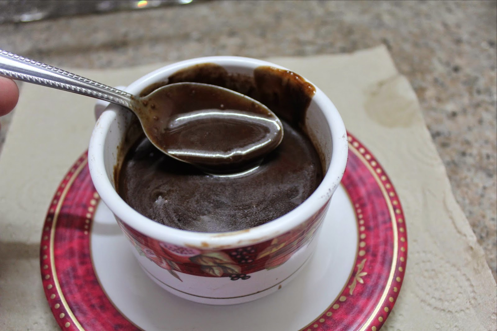

Tsokolate Eh Recipe

Tsokolate Eh is a traditional Filipino hot chocolate drink that's perfect for cold Christmas mornings. Here's how to make it:
Ingredients:
- 2 cups water
- 3-4 tablespoons cocoa powder
- 1/2 cup evaporated milk
- 1/4 cup sugar, or to taste
- Pinch of salt
- 1 teaspoon vanilla extract (optional)
- Tablea (Filipino cocoa tablets) for a more authentic flavor (optional)
Instructions:
- In a saucepan, bring water to a simmer.
- Add cocoa powder and stir until dissolved.
- Gradually add evaporated milk while stirring constantly.
- Season with sugar and a pinch of salt, adjusting to taste.
- If using, add vanilla extract for extra flavor.
- If using tablea, add them to the saucepan and stir until completely melted.
- Simmer for a few more minutes until the tsokolate is hot and well combined.
- Pour into mugs and serve hot.
- Enjoy your comforting Tsokolate Eh!